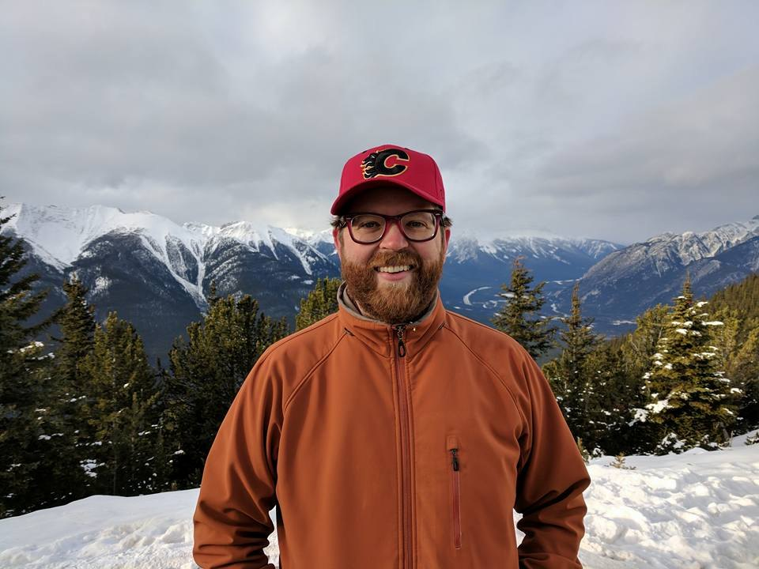

The work
An eleven-month internship at Sanyo in 2002–2003 was a formative international experience. Later, working with Natalia Trayanova, he investigated cardiac optogenetics and personalized models relevant to ablation research. These experiences helped shape his direction in computational cardiac science.
The perspective
Boyle’s interview connected scientific curiosity with the willingness to enter an unfamiliar environment. An experience abroad could change more than technical skills: it could widen a person’s sense of possible careers and of how to work with others.
